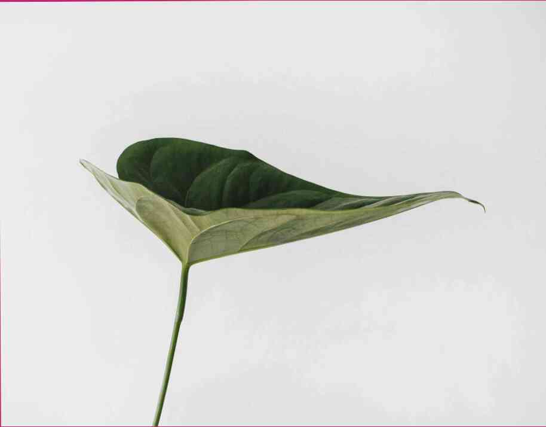

Artículo
Popular

03.04.2021
Cómo bajar de peso rápido?
Drásticamente a soltar el peso es el objetivo de muchas personas en el mundo moderno. Esto no es sorprendente, ya que este es un deseo muy human...

03.04.2021
Casero máscaras hechas de bayas y frutos
fotos Hacer una mascarilla facial con bayas frescas y frutas. Ellos hidratar y nutrir la piel, suavizar las líneas finas.Las bayas y las frutas s...

03.04.2021
Vitaminas y oligoelementos que ayudan a perder peso
es sabido que la causa principal del exceso de peso es la mala nutrición, el ejercicio excesivo y el estrés. Sin embargo, también es importante...